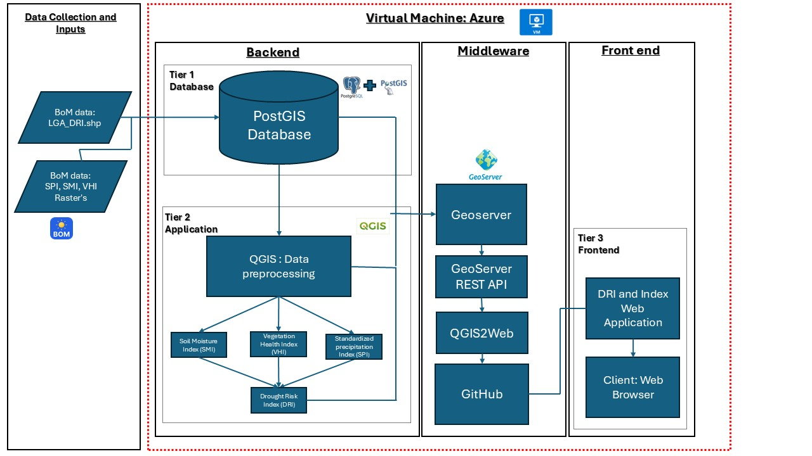
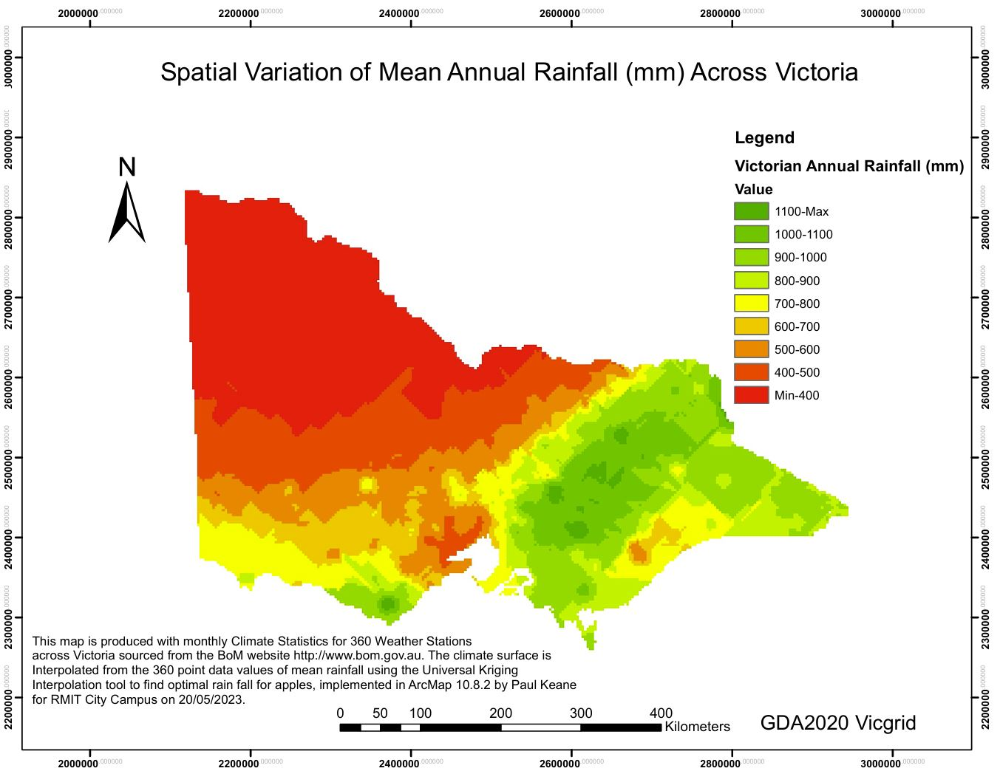
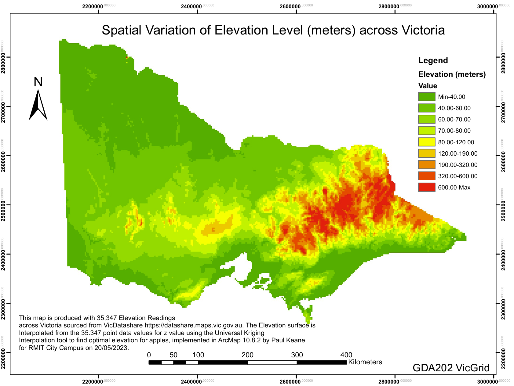
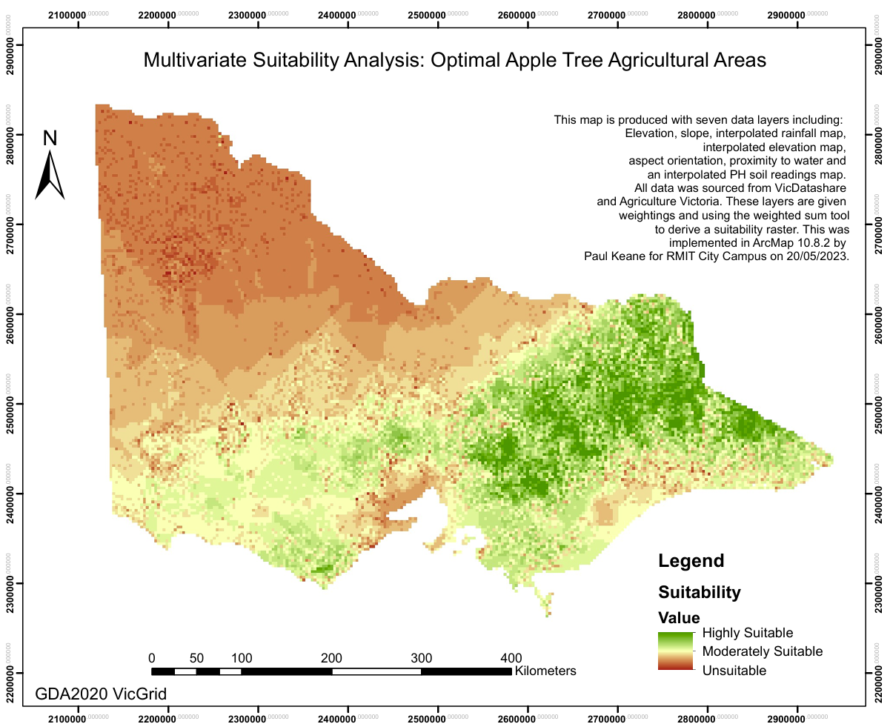
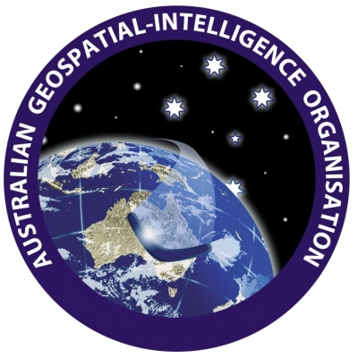

I am a passionate Geospatial Science (Honours) student at RMIT University, specializing in multicriteria analysis and GIS technologies.
I am based in Melbourne, Victoria Australia and I am in my fourth and final year of University. My academic journey and industry experience have equipped me
with strong spatial analytics skills and proficiency in utilizing Geographic Information Systems to create maps.
Combining theoretical knowledge with practical, industry-based skills, I am eager to contribute to and innovate within the geospatial industry. My focus
on multicriteria analysis allows me to approach complex spatial problems with a nuanced, data-driven perspective. I have worked on in the past creating
cloud-based interactive drought index maps and utilizing multicriteria mapping to map optimal apple tree locations in Victoria.
My own personal hobbies include playing classical guitar, reading, and golf!
Academic Portfolio Overview
Cloud-based open-source GIS
A key part of this class was completing a semester-long project focussing on creating a three-tier architecture system within a GIS framework to develop an
interactive mapping application for visualizing drought risk across Australia using open-source data.
Key components of the project included:
Backend: Used PostGIS as a spatial database to store and manage large raster datasets and shapefile LGA DRI datasets.
Middleware: Implemented GeoServer to facilitate interoperability between the backend and frontend, using OGC standards like WMS and WFS.
Frontend: Initially planned to use QGIS2Web and GitHub for hosting, but due to data size limitations, CARTO was used as an alternative to create an interactive web-based map.
QGIS was utilized for data preprocessing and analysis, and included the use of plugins such as PostGIS Raster Import. In order to visualize the map, I created a drought risk
assessment map featuring multiple layers (DRI, VHI, SMI, SPI) visualized through Australia's LGAs, with interactive widgets for user engagement. The visualisation included
appropriately colouring the thematic index layers.
The project demonstrated the potential of open-source GIS tools and cloud-based technologies for creating functional and interactive environmental monitoring applications, while also highlighting challenges in data interoperability and hosting large datasets.
Australian Drought Risk Index (DRI) Architectural Flowchart

This semester long project involved designing and implementing a sophisticated three-tier geospatial data processing and visualization system using cloud-based architecture. Ultimately, this was the conceptual framework created. Deployed on Azure virtual machine, the system integrates various technologies across backend, middleware, and frontend tiers. The backend utilizes PostGIS for spatial data storage and QGIS for data preprocessing, generating critical indices like the Drought Risk Index. The middleware employs GeoServer and its REST API for data serving, while the frontend presents the processed data through a web application accessible via standard web browsers. This architecture showcases my skills in database management, geospatial analysis, web services, and full-stack development, highlighting my ability to create comprehensive solutions for complex geospatial challenges.
Australian Drought Risk Index (DRI) Map Web App
This interactive map showcases my skills in cloud-based, open-source GIS solutions by visualizing the Drought Risk Index (DRI) across Australia's Local Government Areas. Utilizing data from the Bureau of Meteorology, the map integrates multiple indices including Vegetation Health, Soil Moisture, and Standardized Precipitation to provide a comprehensive view of drought susceptibility. Feel free to explore the various layers to gain insights into how drought risk varies across the continent, with particular attention to the higher risk areas in Central and Western Australia, highlighting the vulnerability of remote communities.
Spatial Information Science Analytics
In the Spatial Information Science Analytics class, I undertook a comprehensive GIS project to identify optimal locations for apple tree cultivation in Victoria, Australia.
This project allowed me to apply advanced GIS technologies and operations to a real-world agricultural challenge.
Project components:
Utilized ArcMap and ArcGIS Pro for data manipulation and analysis
Created interpolated maps for rainfall and elevation using Universal Kriging methods
Developed raster layers for factors including slope, aspect, water proximity, and soil pH
Performed raster analysis and reclassification
Conducted a weighted sum analysis for multi-criteria decision making
Technical Skills Applied:
Geostatistical analysis
Raster manipulation
Multi-criteria suitability analysis
Map design and layout creation
Results and Outputs:
1. Interpolated rainfall map of Victoria
2. Interpolated elevation map of Victoria
3. Final multivariate suitability map for apple tree agriculture
The project revealed that ideal conditions for apple tree growing were lower elevation, lower slope, higher rainfall, northern or southern aspect, proximity to water
sources, and soil pH between 5.8 and 7. The findings were validated against existing orchard locations, demonstrating the practical applicability of the analysis.
This project not only enhanced my GIS skills but also contributed valuable insights into optimal agricultural land use in Victoria, potentially informing future
orchard planning and development strategies.
Note: If map display is too small, right-click the image and 'Open in new tab' to allow zooming of the map.
Optimal Annual Rainfall Interpolation Map

This map demonstrates my proficiency in spatial analysis and data visualization using ArcMap 10.8.2. I created a map showcasing the spatial variation of mean annual rainfall across Victoria, Australia, using data from 360 weather stations. The analysis employed Universal Kriging interpolation to generate a continuous rainfall surface from point data. The resulting map effectively illustrates the rainfall gradient across the state, with higher precipitation in the eastern regions (represented in green) and drier conditions in the northwest (shown in red).
Optimal Elevation Level Interpolation Map

This map showcases my expertise in handling large datasets and applying advanced spatial interpolation techniques. I created a detailed elevation map of Victoria, Australia, utilizing 35,347 elevation readings sourced from VicDatashare. The analysis employed Universal Kriging interpolation to generate a continuous elevation surface from point data. The resulting map effectively illustrates the topographic variation across Victoria, with lower elevations (green) dominating the west and north, and higher elevations (red) concentrated in the eastern regions, clearly depicting the Victorian High Country.
Final Weighted Map of Optimal Apple tree growing areas

This final map showcases my advanced GIS skills through a comprehensive multivariate suitability analysis for apple tree cultivation in Victoria. I integrated seven diverse data layers including elevation, rainfall, soil pH, and proximity to water, applying weighted sum analysis to identify optimal agricultural areas. The resulting map effectively visualizes highly suitable to unsuitable regions for apple orchards, demonstrating my proficiency in complex spatial analysis, data integration, and the practical application of GIS technology to agricultural planning.
Industry Experience
This section will cover my work experience as of September 2024. As an aspiring geospatial scientist and data analyst, I have cultivated a diverse range of experiences in the geospatial industry. My professional journey has been marked
by roles at prominent organizations across the private and public sector, including as a geospatial analyst for the Australian Department of Defence and as an assistant
surveyor with the McMullen Nolan Group (MNG). These experiences have not only honed my technical skills but also developed my ability to apply geospatial analysis to
real-world challenges. It has given me an opportunity to showcase and use my skills learnt throughout my time at RMIT University in practical settings.
McMullen Nolan Group (MNG)
Surveying Assistant and Geospatial Trainee
Apil 2023 - Present (as of September 2024)
My role as a Surveying Assistant at McMullen Nolan Group (MNG) has been a pivotal part of my professional development in the geospatial industry. This position has provided me with hands-on experience in various aspects of surveying and
geospatial work, offering valuable experience in construction and cadastral projects at all stages of development.
At MNG, I have undertaken a diverse range of surveying tasks, from feature surveys to more complex geophysical projects. My work at MNG has been largely ground-based, through collection of data utilising Leica Total Stations, Multichannel
Analysis of Surface Waves (MASW) machinery, and mobile laser scanning. I have worked in development projects relating to the creation of housing estates, as well as interesting laser scanning projects for removals of level crossings in Northern Melbourne.
A significant part of my role involves using specialized surveying software such as Leica Infinity and Captivate. These tools have enhanced my technical skills in data processing and analysis, particularly in transforming raw field data into meaningful
geospatial information. This experience has reinforced the importance of accurate data collection and rigorous quality control in producing reliable survey results.
Working at MNG has also highlighted the critical role of teamwork in surveying projects. Assisting survey team leaders in both field and office-based tasks has improved my ability to communicate effectively and work collaboratively in a professional environment.
This experience has been invaluable in understanding the workflow of surveying projects from initial planning to final deliverables.
Overall, my time at MNG has significantly expanded my practical skills in the geospatial field. It has provided me with a solid foundation in surveying techniques and their application in various contexts, complementing my academic knowledge and previous work
experiences in hospitality. This role has reinforced my passion for geospatial science and has been crucial in shaping my understanding of the industry's diverse applications and challenges.
See below for more information about MNG:
Australian Geospatial-Intelligence Organisation

Geospatial Analyst
April 2024 - Present (as of September 2024)
In my current position as a Geospatial Analyst at the Australian Department of Defence, I have been able to apply and expand upon my geospatial science knowledge in an intelligence and public service
environment. This role has allowed me the opportunity to contribute to strategic operations, and be involved in multinational projects, collaborating with other government agencies and organisations.
A significant part of my responsibilities involves conducting complex geospatial analysis using ArcGIS Pro. This work has allowed me to delve deep into raster geodesy analysis, producing enhanced outputs that directly support strategic operations. The complexity of these analyses has pushed me to continuously refine my analytical skills and deepen my understanding of geospatial concepts.
One of the most rewarding aspects of my role has been the opportunity to implement Python scripting within ArcGIS Pro. I've developed scripts to automate multi-processes for raster analysis, which has significantly improved the efficiency of our height systems analysis across Australia. This experience has not only enhanced my programming skills but also demonstrated the power of automation in handling large-scale geospatial tasks.
Working in a government setting has also honed my ability to manage and maintain effective stakeholder relationships. I've learned to communicate complex geospatial concepts clearly to various audiences, ensuring that our analyses and findings are understood and effectively utilized across different departments. This has been crucial in facilitating successful project outcomes and highlighting the value of geospatial intelligence in strategic decision-making.
Overall, my experience as a Geospatial Analyst has been incredibly rewarding and has significantly advanced my professional growth in the field of geospatial science. It has allowed me to apply my academic knowledge to real-world, and to gain experience in collaborative projects on a large scale.
Visit the Australian Geospatial-Intelligence Organisation (AGO) website
Skills and Proficiencies
GIS
QGIS
Cartographic Principles
Adobe Illustrator
Remote Sensing
Photogrammetry and Drone Mapping
Multicriteria Analysis
Web GIS
Python Programming
SQL Database Management
Credits and Attributions
The following programming languages and software were used to create the website
HTML
CSS
JavaScript
Visual Studio Basic
The deliverables contains content from the following subjects:
Cloud-based GIS (GEOM2138)
Spatial Information Science Analytics (GEOM1057)
Special thanks to the following people, notably Nicholas Lee who created the website template, who have helped me make this website with their expertise and guidance: